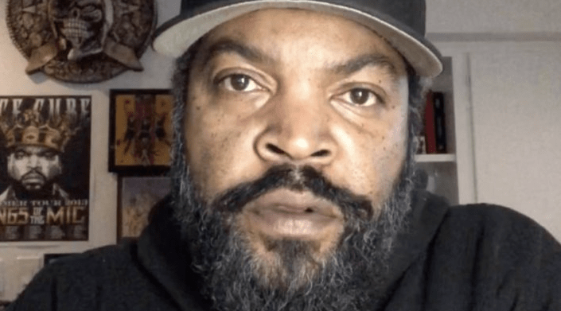

voltar
O'Shea Jackson

O'Shea Jackson
Nascimento: 15 de junho de 1969
Filho(a)(s): 5
idade:52 anos
sua historia e feitos:
O'Shea Jackson Sr. (Los Angeles, 15 de junho de 1969), mais conhecido pelo seu nome artístico Ice Cube, é um rapper, produtor musical, ator, escritor, comediante, produtor cinematográfico e diretor norte-americano. Ele iniciou sua carreira em 1984 como membro do grupo C.I.A. e depois entrou para o grupo de gangsta rap N.W.A em 1986. Após ter deixado o N.W.A em dezembro de 1989,[2] ele construiu uma carreira solo bem sucedida na música, e também como escritor, diretor, ator e produtor no cinema. Adicionalmente, ele tem servido como um dos produtores da série de televisão da Showtime Barbershop e da série da TBS Are We There Yet?, ambas sendo baseadas em filmes onde ele atuou como o personagem principal.
Ele foi classificado número 9 na lista dos 10 Maiores MCs de Todos os Tempos da MTV, enquanto o próprio Snoop Dogg o elegeu o maior MC de todos os tempos.[3] About.com o classificou o número 11 na sua lista dos "50 Melhores MC's do Nosso Tempo".[4] Allmusic o chamou de um dos melhores e mais controversos artistas do hip-hop,[5] assim como "um dos melhores contadores de histórias do rap."[6] Em 2012, a revista The Source o classificou número 14 na sua lista dos 50 Melhores Letristas de Todos os Tempos.[7]